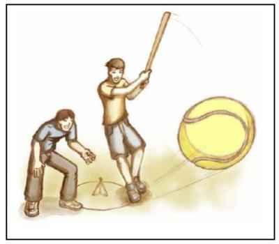

Questão 1 · Traumatismos Oculares · 4000002419Assinale a alternativa INCORRETA com relação às lesões traumáticas do globo ocular.
A O olho torna-se amolecido devido à diminuição da pressão intraocular e a câmara anterior pode apresentar-se plana e rasa.
B Se a ruptura ocorreu na face anterior do globo ocular, seu conteúdo pode ser visto sendo eliminado para fora do olho.
C O principal objetivo no tratamento inicial da ruptura do globo ocular é a proteção do olho lesado para evitar lesões adicionais.
D Devem ser retirados todos os corpos estranhos, tecidos ou coágulos antes da aplicação do curativo estéril de proteção.
Questão 2 · Queimaduras Químicas Oculares · 4000002358Com relação às queimaduras químicas do globo ocular, assinale a alternativa INCORRETA.
A As substâncias alcalinas precipitam as proteínas teciduais, o que resulta na formação de uma barreira natural contra uma penetração tecidual maior.
B O tratamento inicial consiste em irrigação contínua e abundante. Não deve ser tentada a neutralização do agente químico lesivo.
C O blefaroespasmo costuma ser intenso e as pálpebras devem ser abertas manualmente durante a irrigação.
D As substâncias alcalinas combinam-se com os lipídeos das membranas celulares, levando à sua destruição e à rápida penetração do agente cáustico, estendendo sua ação destrutiva a outros tecidos.
Questão 3 · Ruptura do Globo Ocular e Lesão Ocular Penetrante · 4000130162Homem, 23a, teve o olho esquerdo atingido por um fragmento de madeira. Ao exame físico, olho esquerdo: ferimento cortante na esclera com evidência de saída de humor aquoso. A conduta antes da avaliação do especialista é:
A Curativo protetor, sem compressão sobre o globo ocular.
B Curativo compressivo e exame radiográfico de crânio.
C Comprimir as bordas das feridas para rafia.
D Pinçar o ferimento e curativo compressivo.
Questão 4 · Corpo Estranho Corneano e Conjuntival · 4000115826Na coordenação do cuidado de situações oftalmológicas na APS, assinale a alternativa correta que o MFC deve referenciar a pessoa ao oftalmologista, após o primeiro atendimento e medidas iniciais.
A Isadora, 23 anos, babá, com hiperemia conjuntival, fotofobia e lacrimejamento importantes há 4 dias, compatíveis com conjuntivite viral.
B Antônio, 27 anos, indígena, com artrite assimétrica subaguda, uretrite não-gonocócica e conjuntivite reativa compatíveis com síndrome de Reiter.
C Patrícia, 15 anos, estudante, com hiperemia conjuntival e secreção mucopurulenta importantes há 3 dias, além da visão turva, compatíveis com conjuntivite bacteriana.
D José, 52 anos, marceneiro, com corpos estranhos (duas pequenas farpas de madeira) na córnea, desvio da pupila e redução da acuidade visual.
E Marina, 53 anos, negra, com hemorragia conjuntival em limbo temporal direito, após pico hipertensivo sistêmico.
Questão 5 · Traumatismos Oculares · 4000026399No pronto-socorro: jovem de 22 anos do sexo feminino dá entrada com dor ocular e derrame intraocular, após trauma contuso. Qual seria a conduta correta até a chegada do especialista? Assinale a CORRETA:
A Explorar o olho, na tentativa de identificar a lesão.
B Lavar com soro fisiológico.
C Iniciar colírio antisséptico.
D Curativo oclusivo compressivo e analgesia.
E Iniciar analgesia e encaminhar o paciente para o ambulatório do oftalmologista.
Questão 6 · Hif ema Traumático · 4000018986Arthur é atendido e internado em hospital de urgência após acidente automobilístico. Entre as diversas especialidades médicas que assistem o paciente devido seu politrauma, qual foi a solicitada para avaliação e conduta de hifema?
A Cirurgia buco-maxilo-facial.
B Cirurgia torácica.
C Infectologia.
D Oftalmologia.
E Otorrinolaringologia.
Questão 7 · Fratura Orbitária · 4000107937Quais são as paredes da órbita que são acometidas com maior frequência nos casos de fraturas isoladas de face?
A Paredes medial e superior
B Paredes superior e inferior
C Paredes inferior e medial
D Paredes lateral e medial
Questão 8 · Abrasões Corneanas · 4000099778Diante de um caso de erosão de córnea após trauma com objeto de pequeno tamanho, como, por exemplo, uma lente de contato, assinale a alternativa CORRETA:
A A aplicação do corante de fluoresceína está contraindicada, pois dificulta a visualização da área danificada.
B O médico clínico deve encaminhar obrigatoriamente o paciente para a avaliação oftalmológica o mais precocemente possível.
C Como primeira medida terapêutica, deve-se aplicar colírio anestésico ou colírios de esteroides.
D Deve-se encaminhar o paciente ao oftalmologista se o quadro de dor persistir após 48 horas da primeira consulta.
E Analgésicos orais são ineficazes para alívio da dor ocular nos casos de erosão corneana, não havendo indicação para seu uso.
Questão 9 · Traumatismos Oculares · 4000052148Criança de sete anos brincava de jogar bets (VER IMAGEM) com seus colegas em casa quando em um lance, ao passar por trás de seu companheiro que estava para rebater uma bola, sofreu um forte impacto do taco de bets em seu olho esquerdo. No momento do impacto, foi levado ao hospital, onde, no pronto atendimento, o exame físico revelou: hematoma periorbitário esquerdo com edema importante. Movimentos oculares preservados em todas as direções. Amaurose à esquerda. Re exo pupilar lento à esquerda. O reflexo vermelho estava presente e com brilho característico em olho direito, porém não havia reflexo vermelho em olho esquerdo. Assinale a alternativa CORRETA com relação ao quadro clínico em questão:

A Os sinais observados são de um trauma ocular contuso com provável descolamento de retina, uma consequência comum nesse tipo de trauma.
B Os sinais observados evidenciam um trauma ocular explosivo com fratura orbitária em "blow out", clássica de traumas oculares.
C A ruptura total do nervo óptico é a causa mais comum de amaurose pelo quadro clínico descrito.
D O olho se comporta como uma víscera maciça no trauma ocular contuso.
E O tipo de trauma ocular penetrante descrito impõe como tratamento de primeira linha intervenção cirúrgica imediata para evitar perda de tecido intraocular e consequente perda irreversível da visão do olho afetado.
Questão 10 · Hif ema Traumático · 4000017966Hifema:
A Pus no vítreo.
B Hemorragia da câmara anterior.
C Pus na câmara posterior.
D Hemorragia do vítreo.
E Pus na câmara anterior.
Questão 11 · Ruptura do Globo Ocular e Lesão Ocular Penetrante · 4000119508NÃO é sinal sugestivo de ferimento perfurante ocular:
A Hemorragia na câmara anterior.
B Hifema.
C Pupila piriforme.
D Hemorragia de retina.
E NDA.
Questão 12 · Fratura Orbitária · 4000047073Paciente do sexo masculino, atleta de 19 anos, jogava uma partida de tênis no seu clube como de costume. Ao nal do primeiro set sofreu um ataque de seu adversário, no qual a bola de tênis atingiu seu olho direito com grande velocidade e alto impacto. Sentiu uma dor muito intensa, começou a enxergar embaçado e em alguns minutos passou a enxergar duplo. Dirigiu-se ao pronto atendimento onde no exame físico constatou-se: edema e hematoma periorbitário à direita, com limitação do olhar para cima e discreto desvio medial de olho direito, com hiperemia conjuntival e proptose. Sobre o tipo de trauma sofrido pelo paciente em questão, assinale a alternativa incorreta:
A A turvação visual pode ter sido resultante de sangramento na câmara anterior, também chamado de hifema, secundário ao trauma.
B Descolamento de retina e coroide são possíveis complicações desse tipo de trauma.
C Como as paredes orbitárias medial e inferior são mais espessas, são as que menos sofrem fraturas nesse tipo de trauma.
D Fratura por explosão pode ser uma consequência dessa contusão.
E A diplopia tem como uma das causas a exoftalmia, que nesse caso poderia ser uma consequência de sangramento intraorbitário.
Questão 13 · Queimaduras Químicas Oculares · 4000113369A conduta imediata na queimadura química por álcali na região ocular é:
A Lavagem ocular copiosa com solução tampão ácida.
B Lavagem ocular copiosa com Ringer lactato e lidocaína.
C Curativo oclusivo e encaminhamento ao oftalmologista.
D Lavagem ocular copiosa com soro fisiológico.
E Instilação de colírio anestésico e antibiótico.
Questão 14 · Hif ema Traumático · 4000023474ADAPTADA - O que é Hifema: Respostas: 1 12
A Pus no vítreo.
B Hemorragia da câmara anterior
C Pus na câmara posterior.
D Hemorragia do vítreo.
E Pus na câmara anterior.